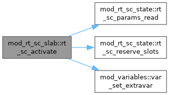
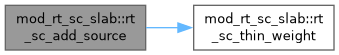
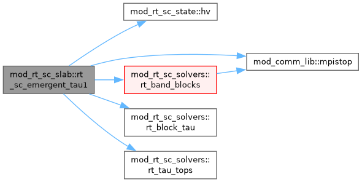

Public face of the short-characteristics (SC) radiative transfer and its coupling to the (M)HD. More...
Functions/Subroutines | |
| subroutine, public | rt_sc_activate () |
| Switch the RT on. The physics module calls this from its initialisation when hd_radiative_transfer or mhd_radiative_transfer is set. It reads &rt_list, reserves the intensity slots of the wavefront and registers the output variables Qrad and Frad, with Iout as well for the replicated solver and the validation mode, which fill it. rt_sc_setup follows once the units and the domain are known. | |
| subroutine, public | rt_sc_pin_refine (igrid, level, my_refine, my_coarsen) |
| Hold every block overlapping an RT band on rt_sc_amr_level. Called from forcedrefine_grid after usr_refine_grid, so it overrides both the estimator and the user. | |
| subroutine, public | rt_sc_selftest () |
| Self-test of the real sweep on an analytic slab. J must approach B where the slab is optically thick, stay finite in the tenuous top, where the gray FLD coefficient D = c lambda/(kappa rho) would diverge, and stay bounded by the source everywhere. The slab is horizontally infinite, so the test sets thermal side inflows, which are exact for it, a thermal bottom and an open top, and restores the run's boundaries afterwards. | |
| subroutine, public | rt_sc_emergent_tau1 () |
| Horizontal mean of Fy on the tau = rt_sc_tau_emergent surface, the photosphere, into rt_sc_Ftau1. The flux controller needs this value, since Frad is not conserved above tau = 1 and the flux at the band top reads larger. Only the first band is searched, since it is the one that holds the photosphere, and tau comes from the band top as in the KBA heat blend. | |
| subroutine, public | rt_sc_add_source (qdt, ixil, ixol, wct, w, x, thin_share, e_internal) |
| Unsplit heating source of one block and stage, e += qdt Q, with Q read from i_qrad, which is zero outside the bands. The heating is limited so that one stage changes the gas energy by at most rt_sc_cfl of itself. | |
| pure elemental double precision function, public | rt_sc_thin_weight (te_code, y_code, p_code) |
| Share of the radiative losses taken by the optically thin treatment, with SC taking the rest, 1 - w_thin. The thin cooling and the user SC source both call this, so they share one definition. Inside a band w_thin is the product of a temperature gate and a pressure gate, so a cell goes to SC when it is cool or dense, as in the opacity switch. The pressure gate max(0, 1 - (p/p_TR)^2) of MURaM's Qthin is exactly zero in the photosphere. Outside every band, or without RT, w_thin = 1, because there is no SC there to take over. The step to one at the band edge marks where SC stops, and the gas there is coronal, with the temperature gate already close to one. | |
Detailed Description
Public face of the short-characteristics (SC) radiative transfer and its coupling to the (M)HD.
The rest of AMRVAC (amrvac.t, mod_errest and mod_radiative_cooling) and the user files reach the RT through this module alone. It re-exports mod_rt_sc_state and mod_rt_sc_solvers and adds the routines that couple the transfer to the gas. rt_sc_add_source applies the heating every stage, limited so that one stage changes the gas energy by at most rt_sc_cfl of itself. rt_sc_thin_weight divides the radiative losses between SC and the thin cooling. rt_sc_pin_refine holds the bands on rt_sc_amr_level, and rt_sc_emergent_tau1 measures the flux on the tau = 1 surface for a flux controller, and rt_sc_selftest checks the sweep on an analytic slab
The modules form a chain without cycles. mod_rt_sc_opacity and mod_rt_sc_kernel are leaves, mod_rt_sc_state uses both, mod_rt_sc_solvers uses the state, and this module uses the solvers
Jack Jenkins (10.2026); More or less finished in v1 state for amrvac4.0
Function/Subroutine Documentation
◆ rt_sc_activate()
| subroutine, public mod_rt_sc_slab::rt_sc_activate |
Switch the RT on. The physics module calls this from its initialisation when hd_radiative_transfer or mhd_radiative_transfer is set. It reads &rt_list, reserves the intensity slots of the wavefront and registers the output variables Qrad and Frad, with Iout as well for the replicated solver and the validation mode, which fill it. rt_sc_setup follows once the units and the domain are known.
Definition at line 38 of file mod_rt_sc_slab.t.

◆ rt_sc_add_source()
| subroutine, public mod_rt_sc_slab::rt_sc_add_source | ( | double precision, intent(in) | qdt, |
| integer, intent(in) | ixi, | ||
| integer, intent(in) | l, | ||
| integer, intent(in) | ixo, | ||
| l, | |||
| double precision, dimension(ixi^s,1:nw), intent(in) | wct, | ||
| double precision, dimension(ixi^s,1:nw), intent(inout) | w, | ||
| double precision, dimension(ixi^s,1:ndim), intent(in) | x, | ||
| logical, intent(in) | thin_share, | ||
| logical, intent(in) | e_internal ) |
Unsplit heating source of one block and stage, e += qdt Q, with Q read from i_qrad, which is zero outside the bands. The heating is limited so that one stage changes the gas energy by at most rt_sc_cfl of itself.
- Parameters
-
[in] thin_share True when the thin cooling is also on. The SC heating then takes only the share 1 - w_thin, so that no loss is counted twice [in] e_internal True when the energy variable is the internal energy, as with mhd_internal_e
Definition at line 198 of file mod_rt_sc_slab.t.

◆ rt_sc_emergent_tau1()
| subroutine, public mod_rt_sc_slab::rt_sc_emergent_tau1 |
Horizontal mean of Fy on the tau = rt_sc_tau_emergent surface, the photosphere, into rt_sc_Ftau1. The flux controller needs this value, since Frad is not conserved above tau = 1 and the flux at the band top reads larger. Only the first band is searched, since it is the one that holds the photosphere, and tau comes from the band top as in the KBA heat blend.
Definition at line 146 of file mod_rt_sc_slab.t.

◆ rt_sc_pin_refine()
| subroutine, public mod_rt_sc_slab::rt_sc_pin_refine | ( | integer, intent(in) | igrid, |
| integer, intent(in) | level, | ||
| integer, intent(inout) | my_refine, | ||
| integer, intent(inout) | my_coarsen ) |
Hold every block overlapping an RT band on rt_sc_amr_level. Called from forcedrefine_grid after usr_refine_grid, so it overrides both the estimator and the user.
Definition at line 51 of file mod_rt_sc_slab.t.
◆ rt_sc_selftest()
| subroutine, public mod_rt_sc_slab::rt_sc_selftest |
Self-test of the real sweep on an analytic slab. J must approach B where the slab is optically thick, stay finite in the tenuous top, where the gray FLD coefficient D = c lambda/(kappa rho) would diverge, and stay bounded by the source everywhere. The slab is horizontally infinite, so the test sets thermal side inflows, which are exact for it, a thermal bottom and an open top, and restores the run's boundaries afterwards.
Definition at line 80 of file mod_rt_sc_slab.t.
◆ rt_sc_thin_weight()
| pure elemental double precision function, public mod_rt_sc_slab::rt_sc_thin_weight | ( | double precision, intent(in) | te_code, |
| double precision, intent(in) | y_code, | ||
| double precision, intent(in) | p_code ) |
Share of the radiative losses taken by the optically thin treatment, with SC taking the rest, 1 - w_thin. The thin cooling and the user SC source both call this, so they share one definition. Inside a band w_thin is the product of a temperature gate and a pressure gate, so a cell goes to SC when it is cool or dense, as in the opacity switch. The pressure gate max(0, 1 - (p/p_TR)^2) of MURaM's Qthin is exactly zero in the photosphere. Outside every band, or without RT, w_thin = 1, because there is no SC there to take over. The step to one at the band edge marks where SC stops, and the gas there is coronal, with the temperature gate already close to one.
- Parameters
-
[in] te_code Temperature in code units [in] y_code Height along updim in code units [in] p_code Thermal pressure in code units
Definition at line 254 of file mod_rt_sc_slab.t.
Generated by